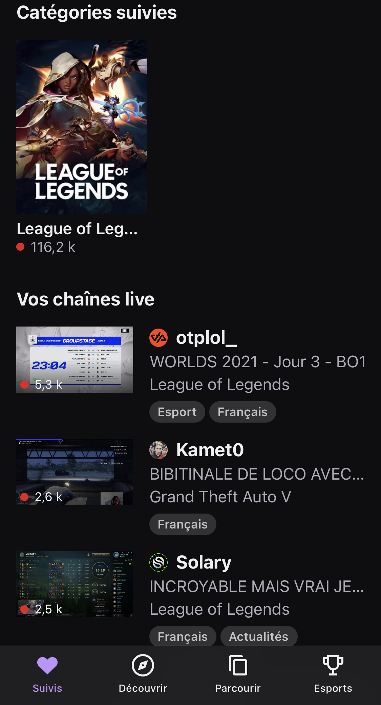

Twitch
Twitch est une application de Streaming qui permet de regarder des gens jouer aux jeux vidéos mais pas uniquement.
Cette application représente pour moi l'innovation car elle a réussi a bouleverser les codes présent a l'époque de sa création. En effet Twitch voit le jour en 2011 dans une époque ou Youtube Dominait toutes les autres plateformes de streaming avec un concept nouveau: regardait des personnes jouer en temp réel et pouvoir communiquer avec eux.
Alors que les vidéaste de l'époque maitriser totalement leur contenus avec le montage avec de publier une vidéo Twitch bouleverse les codes et met en avant plus de naturel et moi d'artifices de la part des créateurs de contenu.
Ceçi a ausi un effet direct sur les viewvers qui se sentent plus proche de leur streameur. Au début Twitch marchait beaucoup pour les Web Tv comme Eclypsia mais les grand Vidéaste de l'époque (Squeezie,Cyprien...) ne s'aventurer pas sur ce terrain inconnu ce qui arriveras bien plus tard quand Twitch connaîtra un essort et deviendras le Twitch d'aujourd'hui.
En effet maintenant Twitch n'attire plus exclusivement les gamers de nombreux sportifs tel que le tennisman Gaël Monfils ou encore le pilote automobile Lando Norris streament régulièrement. Même les politiques tente l'aventure aujourd'hui pour essayer de toucher un public plus jeune qu'à la TV comme Jean castex.